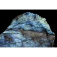

Correspondence Grimoire
Hope

LabradoriteHope is not only for a special, privileged, unburdened few, it has historically been a source of power and endurance for marginalized people to overcome horrible circumstances. From survivors of the transatlantic slave trade, the Holocaust, the Irish potato famine, and countless other tragedies come incredible stories of joy, celebrations, rituals of love, and visioning hopeful futures. Hope is the backbone of every successful revolution and victory of the marginalized.
Hope as Magical Power
For practitioners with religious trauma, belief can feel dogmatic, restricting, and dangerous. Hope offers an alternative pathway to power. If hope can strengthen the nerve of revolutionaries, lighten the hearts of the imprisoned, and fuel the exhausted on their journey to freedom, then hope is not only a powerful tool for survival, it is also an incredible catalyst for powerful magic.
As Witches and magic makers, we must actively challenge the idea of impossible. Magic by nature laughs at the idea of impossible and rewards those who laugh along with it. When we imbue our spells with hope, we add a certain oomph to the magic that gives it swifter wings and more agility to navigate, negotiate, and downright cross that line between possible and impossible.
Nurturing Hope
Hope requires attention, it has needs we must meet for it to support us. Hope is like a muscle: if ignored and unused, it can atrophy. If nurtured, it can grow strong enough to change lives, end tragedies, and build new worlds.
For hope to power your magic, you must be able to feel it. To feel it, you must give it what it needs to grow.
Love
To love hope is to invite it into your body and mind. To lean into the pleasure of its presence inside of you. To enjoy it fully and live unafraid in the mindset it inspires. To love hope is to affirm its presence with "I am feeling so hopeful" or "I have hope." Loving hope means being proud to be counted among the hopeful and unashamed of how hope moves you to feel and act in the world.
Protection
To protect hope is to witness when it is under attack and intervene. To be mindful of what you consume that may weaken it. Not to be ignorant of reality, but to gather tools to combat hopelessness inside of you. To protect hope is to find hope-building activities and commit to them. Most of all, to protect hope is to find actions to take in the physical world that lead you closer to the reality you are hoping for. Let action be an ally and comrade to hope, for none of us truly thrives alone.
To have hope in this world is an act of spiritual warriorship. It is rebellious and powerfully subversive.
Working with Hope in Magic
The most effective way to connect the power of hope to spells is to do a hope-building ritual as part of the preparation for any magical working. This happens after cleansing, clearing, and centering, as part of the energy-building portion of spellwork.
Invoking Hope as Spirit:
With proper protection in place, call forth hope as you would a spirit or element. Give an offering and address the spirit of hope directly, inviting it to commune with you. Instead of inviting it from outside, call it forth from inside. Visualize hope as a yellow light and summon it forward to fill your body and heart before channeling it through your hands and into the physical components of the spell.
Somatic Hope-Building:
Play a song with hopeful energy and move your body. Shake out fear and anger to make space for hope. Dance, jump, move your hips. Open your heart to the universe by stretching your arms out wide. With your chest out and open, use your breath to channel hope into your body.
Meditation:
Travel within yourself to the center of your heart or gut. Find your hope and see what condition it is in, if it needs something you can give. Then call it forward and into your magic.
Personal Hope Symbols
Symbols that evoke hope include:
- Tarot cards: Strength, Ten of Cups, Four of Wands, The Fool, Judgement
- Objects: Bell, bird feathers, matches, dice showing double sixes
- Any item that elicits a hopeful feeling or reminds you of hopeful times
"May our hope water the barren land of the world, and may our spirits stand strong against hopelessness."